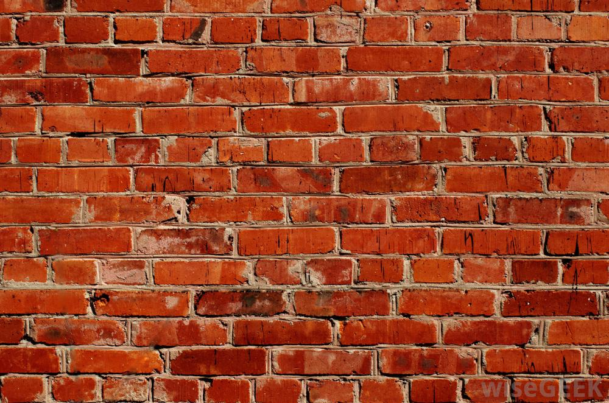

Quick Design Wins
in five minutes
Karen Rustad • PyCon 2015 • Montr√©al, QC
Line-height
body {
line-height: 1.75;
}
h1, h2, h3 {
margin: 0;
}
p {
margin-top: 0;
margin-bottom: 1.125em;
}
Text width
.container {
width: 800px;
margin: 0 auto;
}
.container {
width: 800px;
margin: 0 auto;
}
Contrast
body {
font-size: 16px;
}
h1 {
font-size: 4em;
}
h2 {
font-size: 2em;
}
Fonts
Fonts
Typefaces
plain
bold
italic
Thin 100 weight
Book 300 weight
Normal 400 weight
Bold 700 weight
Ultra-bold 900 weight
Thin 100 weight
Book 300 weight
Normal 400 weight
Bold 700 weight
Ultra-bold 900 weight
Google Fonts:
Grids
Twitter Bootstrap et al

Color
hue contrast: meh
value contrast++
black and white is okay
gentle monochrome is hip

@favColor: #9a3f8a;
@bgColor: lighten(@favColor, 40%);
@boldColor: darken(@favColor, 10%);